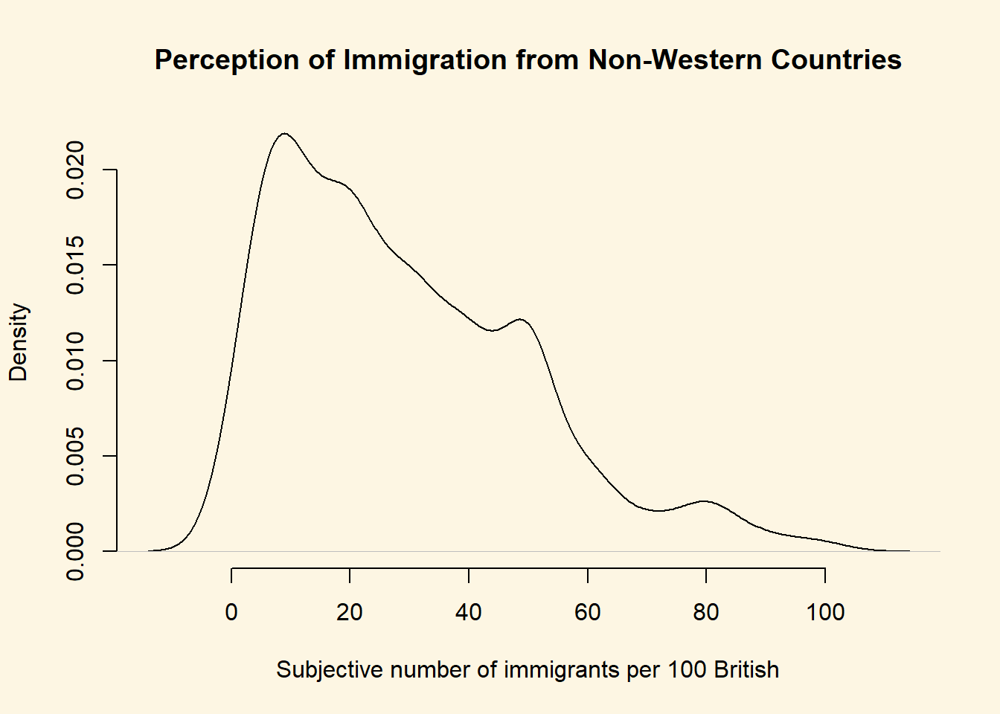
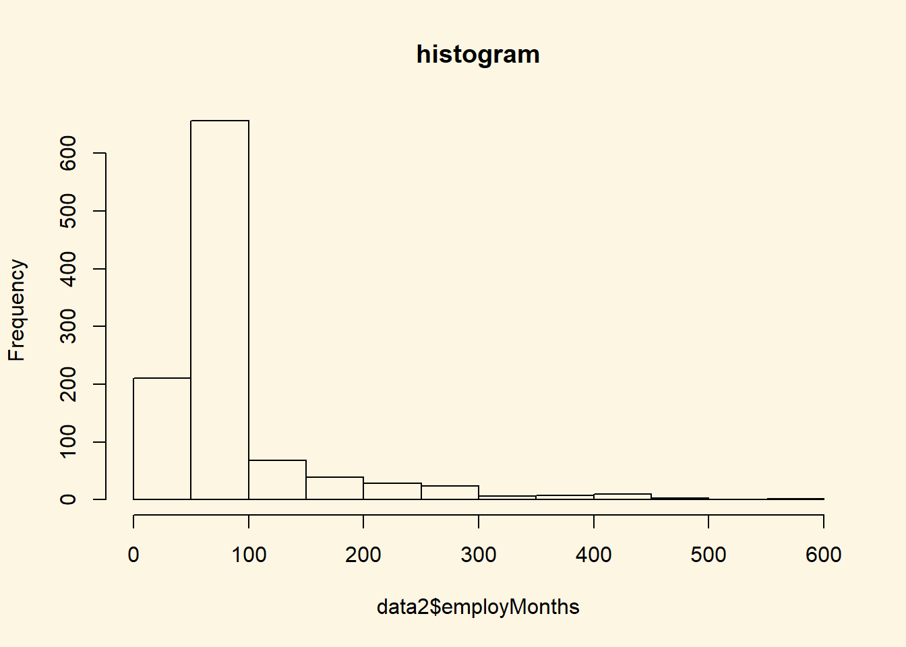
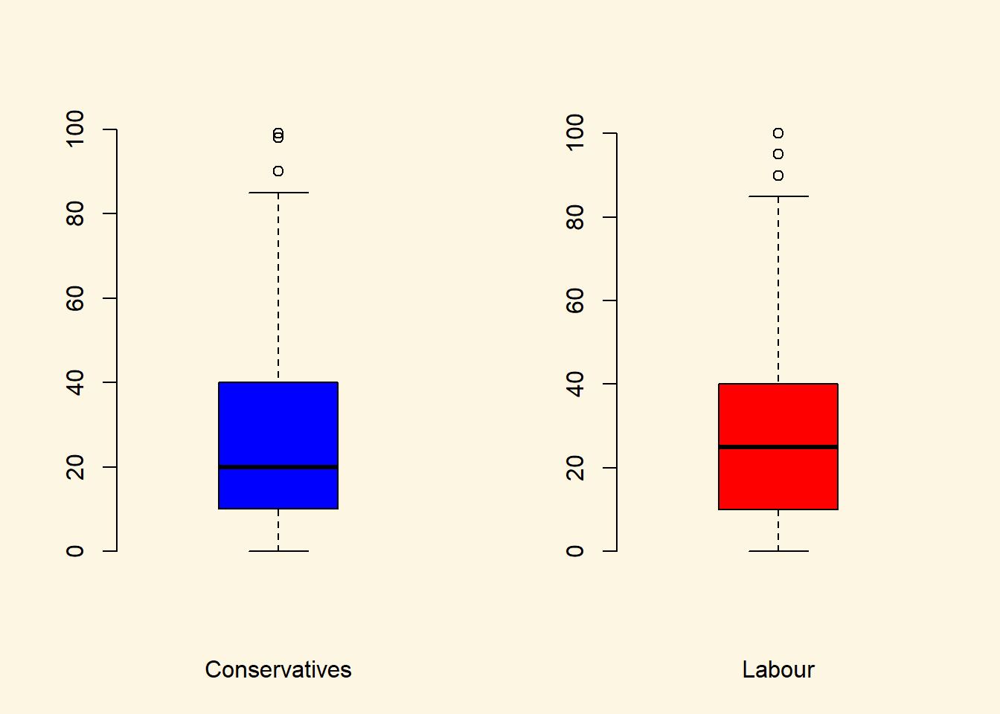

Chapter 2 Research Design, Counterfactuals, Forming Hypotheses
2.1 Seminar
In today’s seminar, we work with data frames (datasets). We will create our own dataset, we subset datasets (access elements, rows and variables). We load our first dataset into R. We also visualise data using the plot() function. Finally, we estimate a treatment effect in R—our first inference.
2.1.1 setting up
We set our working directory. R operates in specific directory (folder) on our computer. We create a folder on our computer where we save our scripts for our statistics 1 class. We name the folder stats1. Let’s create the folder on our computers now (in finder on Mac and explorer on Windows).
Now, we set our working directory to the folder, we just created like so:

Create a new R script and save it as week2.R to your stats1 directory. Now type the following commands in the new file you just created:
# Create a numeric and a character variable
a <- 5 # numeric
a <- "five" # characterSave your script, and re-open it to make sure your changes are still there. Then check your workspace.
# check workspace
ls()
# delete variable 'a' from workspace
rm(a)
# delete everything from workspace
rm( list = ls() )
# to clear console window press Crtl+l on Win or Command+l on Mac2.1.2 vectors and subsetting
Last week we have already worked with vectors. We created a sequence for example. This week, we learn about subsetting (accessing specific elements of our vector).
We create a vector using the c() function, where c stands for collect.
# Create a vector
my.vector <- c(10,7,99,34,0,5) # a vector
my.vector[1] 10 7 99 34 0 5Let’s see how many elements our vector contains using the length() function.
length(my.vector) # how many elements?[1] 6Next, we access the first element in our vector. We use square brackets to access a specific element. The number in the square brackets is the vector element that we access
# subsetting
my.vector[1] # 1st vector element[1] 10To access all elements except the first element, we use the - operator.
my.vector[-1] # all elements but the 1st[1] 7 99 34 0 5We can access elements 2 to 4 by using the colon.
my.vector[2:4] # the 2nd to the 4th elements[1] 7 99 34We can access two specific non-adjacent elements, by using the collect function c().
my.vector[c(2,5)] # 2nd and 5th element[1] 7 0No, we combine the length() function with the square brackets to access the last element in our vector.
my.vector[length(my.vector)] # the last element[1] 52.1.3 data frames
A data frame is an object that holds data in a tabular format similar to how spreadsheets work. Variables are generally kept in columns and observations are in rows.
Before we work with ready-made data, we create a small dataset ourselves. It contains the populations of the sixteen German states. We start with a vector that contains the names of those states. We call the variable state. Our variable shall contain text instead of numbers. In R jargon, this is a character variable, sometimes referred to as a string. Using quotes, we indicate that the variable type is character. We use the c() function to create the vector.
# create a character vector containing state names
state <- c(
"North Rhine-Westphalia",
"Bavaria",
"Baden-Wurttemberg",
"Lower Saxony",
"Hesse",
"Saxony",
"Rhineland-Palatinate",
"Berlin",
"Schleswig-Holstein",
"Brandenburg",
"Saxony-Anhalt",
"Thuringia",
"Hamburg",
"Mecklenburg-Vorpommern",
"Saarland",
"Bremen"
)Now, we create a second variable for the populations. This is a numeric vector, so we do not use the quotes.
population <- c(
17865516,
12843514,
10879618,
7926599,
6176172,
4084851,
4052803,
3670622,
2858714,
2484826,
2245470,
2170714,
1787408,
1612362,
995597,
671489
)Now with both vectors created, we combine them into a dataframe. We put our vectors in and give them names. In this case the variable names in the dataset correspond to our vector names. The name goes in front of the equal sign and the vector object name, after.
popdata <- data.frame(
state = state,
population = population
)You should see the new data frame object in your global environment window. You can view the dataset in the spreadsheet form that we are all used to by clicking on the oject name.
We can see the names of variables in our dataset with the names function
names(popdata)[1] "state" "population"Let’s check the variable types in our data using the str() function.
str(popdata)'data.frame': 16 obs. of 2 variables:
$ state : Factor w/ 16 levels "Baden-Wurttemberg",..: 10 2 1 8 7 13 11 3 15 4 ...
$ population: num 17865516 12843514 10879618 7926599 6176172 ...The variable state is a factor variable. R has turned the character variable into a categorical variable automatically. The variable population is numeric. These variable types differ. We can calculate with numeric variables only.
Often we want to access certain observations (rows) or certain columns (variables) or a combination of the two without looking at the entire dataset all at once. We can use square brackets to subset data frames. In square brackets we put a row and a column coordinate separated by a comma. The row coordinate goes first and the column coordinate second. So popdata[10, 2] returns the 10th row and second column of the data frame. If we leave the column coordinate empty this means we would like all columns. So, popdata[10,] returns the 10th row of the dataset. If we leave the row coordinate empty, R returns the entire column. popdata[,2] returns the second column of the dataset.
We can look at the first five rows of a dataset to get a better understanding of it with the colon in brackets like so: popdata[1:5,]. We could display the second and fifth columns of the dataset by using the c() function in brackets like so: popdata[, c(2,5)].
It’s your turn. Display all columns of the popdata dataset and show rows 10 to 15. Next display all columns of the dataset and rows 4 and 7.
popdata[10:15, ] # elements in 10th to 15th row, all columns state population
10 Brandenburg 2484826
11 Saxony-Anhalt 2245470
12 Thuringia 2170714
13 Hamburg 1787408
14 Mecklenburg-Vorpommern 1612362
15 Saarland 995597popdata[c(4, 7), ] # elements in 4th and 7th row, all column state population
4 Lower Saxony 7926599
7 Rhineland-Palatinate 4052803In order to access individual columns of a data frame we can also use the dollar sign $. For example, let’s see how to access the population column.
popdata$population [1] 17865516 12843514 10879618 7926599 6176172 4084851 4052803
[8] 3670622 2858714 2484826 2245470 2170714 1787408 1612362
[15] 995597 671489Now, access the state column.
popdata$state [1] North Rhine-Westphalia Bavaria Baden-Wurttemberg
[4] Lower Saxony Hesse Saxony
[7] Rhineland-Palatinate Berlin Schleswig-Holstein
[10] Brandenburg Saxony-Anhalt Thuringia
[13] Hamburg Mecklenburg-Vorpommern Saarland
[16] Bremen
16 Levels: Baden-Wurttemberg Bavaria Berlin Brandenburg Bremen ... Thuringia2.1.4 Loading data
Before you load the dataset into R, you first download it and save it locally in your Stats1 folder. Download the data here.
We often load existing data sets into R for analysis. Data come in many different file formats such as .csv, .tab, .dta, etc. Today we will load a dataset which is stored in R’s native file format: .RData. The function to load data from this file format is called: load(). If you managed to set your working directory correctly just now (setwd("~/Stats1")), then you should just be able to run the line of code below.
We load the dataset with the load() function:
# load perception of non-western foreigners data
load("BSAS_manip.RData")The non-western foreingers data is about the subjective perception of immigrants from non-western countries. The perception of immigrants from a context that is not similar to the one’s own ,is often used as a proxy for racism. Whether this is a fair measure or not is debatable but let’s examine the data from a survey carried out in Britain.
Let’s check the codebook of our data.
| Variable | Description |
|---|---|
| IMMBRIT | Out of every 100 people in Britain, how many do you think are immigrants from non-western countries? |
| over.estimate | 1 if estimate is higher than 10.7%. |
| RSex | 1 = male, 2 = female |
| RAge | Age of respondent |
| Househld | Number of people living in respondent’s household |
| party identification | 1 = Conservatives, 2 = Labour, 3 = SNP, 4 = Greens, 5 = Ukip, 6 = BNP, 7 = other |
| paper | Do you normally read any daily morning newspaper 3+ times/week? |
| WWWhourspW | How many hours WWW per week? |
| religious | Do you regard yourself as belonging to any particular religion? |
| employMonths | How many mnths w. present employer? |
| urban | Population density, 4 categories (highest density is 4, lowest is 1) |
| health.good | How is your health in general for someone of your age? (0: bad, 1: fair, 2: fairly good, 3: good) |
| HHInc | Income bands for household, high number = high HH income |
We can look at the variable names in our data with the names() function.
The dim() function can be used to find out the dimensions of the dataset (dimension 1 = rows, dimension 2 = columns).
dim(data2)[1] 1049 19So, the dim() function tells us that we have data from 1049 respondents with 19 variables for each respondent.
Let’s take a quick peek at the first 10 observations to see what the dataset looks like. By default the head() function returns the first 6 rows, but let’s tell it to return the first 10 rows instead.
head(data2, n = 10) IMMBRIT over.estimate RSex RAge Househld Cons Lab SNP Ukip BNP GP
1 1 0 1 50 2 0 1 0 0 0 0
2 50 1 2 18 3 0 0 0 0 0 0
3 50 1 2 60 1 0 0 0 0 0 0
4 15 1 2 77 2 0 0 0 0 0 0
5 20 1 2 67 1 0 0 0 0 0 0
6 30 1 1 30 4 0 0 0 0 0 0
7 60 1 2 56 2 0 0 1 0 0 0
8 7 0 1 49 1 0 0 0 0 0 0
9 30 1 1 40 4 0 0 1 0 0 0
10 2 0 1 61 3 1 0 0 0 0 0
party.other paper WWWhourspW religious employMonths urban health.good
1 0 0 1 0 72 4 1
2 1 0 4 0 72 4 2
3 1 0 1 0 456 3 3
4 1 1 2 1 72 1 3
5 1 0 1 1 72 3 3
6 1 1 14 0 72 1 2
7 0 0 5 1 180 1 2
8 1 1 8 0 156 4 2
9 0 0 3 1 264 2 2
10 0 1 0 1 72 1 3
HHInc
1 13
2 3
3 9
4 8
5 9
6 9
7 13
8 14
9 11
10 82.1.5 Plots
We can visualize the data with the help of a boxplot, so let’s see how the perception of the number of immigrants is distributed.
# how good are we at guessing immigration
boxplot(
data2$IMMBRIT,
main = "Perception of Immigration from Non-Western Countries",
ylab = "Subjective number of immigrants per 100 British",
frame.plot = FALSE, col = "darkgray"
)Notice how the lower whisker is much shorter than the upper one. The distribution is right skewed. The right tail (higher values) is a lot longer. We can see this beter using a density plot. We combine R’s denisty() function with the plot() function.
plot(
density(data2$IMMBRIT),
bty = "n",
main = "Perception of Immigration from Non-Western Countries",
xlab = "Subjective number of immigrants per 100 British"
)We can also plot histograms using the hist() function.
# histogram
hist( data2$employMonths, main = "histogram")It is plausible that perception of immigration from Non-Western countries is related to party affiliation. In our dataset, we have a some party affiliation dummies (binary variables). We can use square brackets to subset our data such that we produce a boxplot only for members of the Conservative Party. We have a look at the variable Cons using the table() function first.
table(data2$Cons)
0 1
765 284 In our data, 284 respondents associate with the Conservative party and 765 do not. We create a boxplot of IMMBRIT but only for members of the Conservative Party. We do so by using the square brackets to subset our data.
# boxplot of immbrit for those observations where Cons is 1
boxplot(
data2$IMMBRIT[data2$Cons==1],
frame.plot = FALSE,
xlab = "Conservatives",
col = "blue"
)
We would now like to compare the distribution of the perception fo Conservatives to the distribution among Labour respondents. We can subset the data just like we did for the Conservative Party. In addtion, we want to plot the two plots next to each other, i.e., they should be in the same plot. We can achieve this with the par() function and the mfrow argument. This will spilt the plot window into rows and columns. We want 2 columns to plot 2 boxplots next to each other.
# split plot window into 1 row and 2 columns
par(mfrow = c(1,2))
# plot 1
boxplot(
data2$IMMBRIT[data2$Cons==1],
frame.plot = FALSE,
xlab = "Conservatives",
col = "blue"
)
# plot 2
boxplot(
data2$IMMBRIT[data2$Lab==1],
frame.plot = FALSE,
xlab = "Labour",
col = "red"
)
It is very hard to spot differences. The distributions are similar. The median for Labour respondents is larger which mean that the central Labour respondent over-estimates immigration more than the central Conservative respondent.
You can play around with the non-western foreigners data on your own time. We now turn to a dataset that is integrated in R already. It is called longley. Use the help() function to see what this dataset is about.
help(longley)Let’s create a scatterplot with the Year variable on the x-axis and Employed on the y-axis.
plot(x = longley$Year, # x-axis variable
y = longley$Employed, # y-axis variable
bty = "n" # no box around the plot
)
To create a line plot instead, we use the same function with one additional argument type = "l".
plot(longley$Year, longley$Employed, type = "l")
Create a plot that includes both points and lines.
plot(longley$Year, longley$Employed, type = "b")2.1.6 Average Treatment Effect
In the lecture, we estimated the average treatment effect on a small example. We will do this again here. Recall, that the average treatment effect is the difference between two means.
Let’s suppose, associating with right-wing parties causes people to over-estimate the number of non-western foreigners. Our treatment variable is whether a respondent assoicates with the UK Independence Party. It is 1 if that is the case and 0 otherwise. Let’s inspect the variable Ukip.
table(data2$Ukip)
0 1
1018 31 31 respondents identify with Ukip.
The average treatment effect, as we learned, would be the difference between the mean outcomes for those who received the treament minus the mean for those who did not reicive the treatment.
We have all the tools to solve the problem. Let’s take the mean of the treated group first.
mean.y.treated <- mean(data2$IMMBRIT[data2$Ukip == 1])
mean.y.treated[1] 24.29032The double equal sign == is a logical operator and means “is equal to”. R returns true or false depending on whether the respondent does identify with Ukip or not. The mean of IMMBRIT is then computed only for respondents who accociate with Ukip.
Let’s take the mean of the second group, the untreated group.
mean.y.untreated <- mean(data2$IMMBRIT[data2$Ukip == 0])
mean.y.untreated[1] 29.17485The treatment effect is the difference in means:
mean.y.treated - mean.y.untreated[1] -4.88453The result is surprising. Ukip members over-estimate the number of non-western foreigners less members of all other paries. Our claim is not quite supported by the data. We should be very careful with these results, however. We used experimental language but our data is observational. A multitude of confounders could bias our estimate of the causal effect.
2.1.7 Exercises
- Create a script and call it assignment02. Save your script.
- Use the
names()function to display the variable names of thelongleydataset. - Use square brackets to access the 4th column of the dataset.
- Use the dollar sign to access the 4th column of the dataset.
- Access the two cells from row 4 and column 1 and row 6 and column 3.
- Using the
longleydata produce a line plot with GNP on the y-axis and population on the x-axis. - Use the help function to find out how to label the y-axis “wealth” and the x-axis “population”.
- Create a boxplot showing the distribution of IMMBRIT by each party in the data and plot these in one plot next to each other.
- Is there a difference between women and men in terms of their subjective estimation of foreingers?
- What is the difference between women and men?
- Could you form a hypothesis out of the relationship that you see if any exists?
- Save your script, which should now include the answers to all the exercises.
- Source your script, i.e. run the entire script without error message. Clean your script if you get error messages.
2.2 Solutions
2.2.1 Exercise 2
Use the names() function to display the variable names of the longley dataset.
names(longley)[1] "GNP.deflator" "GNP" "Unemployed" "Armed.Forces"
[5] "Population" "Year" "Employed" 2.2.2 Exercise 3
Use square brackets to access the 4th column of the dataset.
longley[, 4] [1] 159.0 145.6 161.6 165.0 309.9 359.4 354.7 335.0 304.8 285.7 279.8
[12] 263.7 255.2 251.4 257.2 282.72.2.3 Exercise 4
Use the dollar sign to access the 4th column of the dataset.
longley$Armed.Forces [1] 159.0 145.6 161.6 165.0 309.9 359.4 354.7 335.0 304.8 285.7 279.8
[12] 263.7 255.2 251.4 257.2 282.7Note: There is yet another way to access the 4th column of the dataset. We can put the variable name into the square brackets using quotes like so:
longley[, "Armed.Forces"] [1] 159.0 145.6 161.6 165.0 309.9 359.4 354.7 335.0 304.8 285.7 279.8
[12] 263.7 255.2 251.4 257.2 282.72.2.4 Exercise 5
Access the two cells from row 4 and column 1 and row 6 and column 3.
# row 4, column 1
longley[4, 1][1] 89.5# row 6, column 3
longley[6, 3][1] 193.22.2.5 Exercise 6
Using the longley data produce a line plot with GNP on the y-axis and population on the x-axis.
plot(
y = longley$GNP, # y-axis variable
x = longley$Population, # x-axis variable
type = "l", # produce a line plot
bty = "n", # no box around our plot
main = "Relationship of Population Size and Size of the Economy"
)2.2.6 Exercise 7
Use the help function to find out how to label the y-axis “wealth” and the x-axis “population”.
?plotThe ? is short for the help() function. We see that the xlab argument lets us label the x-axis and the ylab argument lets us label the y-axis. We do so below.
plot(
y = longley$GNP, # y-axis variable
x = longley$Population, # x-axis variable
type = "l", # produce a line plot
bty = "n", # no box around our plot
main = "Relationship of Population Size and Size of the Economy",
xlab = "Population older than 14 years of age",
ylab = "Gross national product"
)
2.2.7 Exercise 8
Create a boxplot showing the distribution of IMMBRIT by each party in the data and plot these in one plot next to each other.
To do that, we load the non-western foreigners dataset first.
Note: You have to set your working directory that R operates in to the location of the dataset.
# load perception of non-western foreigners data
load("BSAS_manip.RData")We have five parties in our dataset. We plot 5 boxplots next to each other. Hence, we separate the plot window into 1 row and 5 columns.
# plot window to 1 row and 5 columns
par(mfrow = c(1, 5))
boxplot(data2$IMMBRIT[ data2$Cons == 1 ], frame.plot = FALSE, col = "blue", xlab = "Tories")
boxplot(data2$IMMBRIT[ data2$Lab == 1 ], frame.plot = FALSE, col = "red", xlab = "Labour")
boxplot(data2$IMMBRIT[ data2$SNP == 1 ], frame.plot = FALSE, col = "yellow", xlab = "SNP")
boxplot(data2$IMMBRIT[ data2$Ukip == 1 ], frame.plot = FALSE, col = "purple", xlab = "Ukip")
boxplot(data2$IMMBRIT[ data2$BNP == 1 ], frame.plot = FALSE, col = "darkblue", xlab = "BNP")2.2.8 Exercises 9 and 10
We combine the answer to questions 9 and 10.
Question from 9: Is there a difference between women and men in terms of their subjective estimation of foreingers?
Question from 10: What is the difference between women and men?
Women’s subjective estimate is the mean of IMMBRIT across women and equally, men’s subjective estimate is the mean of IMMBRIT over all men. Let’s get these numbers with the mean function and the square brackets.
womens.mean <- mean(data2$IMMBRIT[ data2$RSex == 2 ])
womens.mean[1] 32.79159mens.mean <- mean(data2$IMMBRIT[ data2$RSex == 1 ])
mens.mean[1] 24.53766The difference between women and men is the difference in means. Let’s take the difference between them. The difference in means is often referred to as the first difference.
first.difference <- womens.mean - mens.mean
first.difference[1] 8.253937Let’s round that number. We don’t like to see so many decimal places. You should usually present precision up to the second decimal place. We can use the round() function. The first argument is number to round and the second is the amount of digits.
round(first.difference, 2)[1] 8.25We do find a difference between men and women. On average, women’s estimate of the number of non-western foreingers is 8.25 greater than men’s estimate.
At this point we have established that there is a difference in our sample. Samples are subject to sampling variability. That means, we cannot yet say that the difference is systematic, i.e., British women, generally, think that there are more non-western foreingers than British men.
2.2.9 Exercises 11
Could you form a hypothesis out of the relationship that you see if any exists?
Our testable hypothesis could be: Women tend to overestimate the number of foreigners more than men. In our sample, women tend to estimate on the number of foreingers at